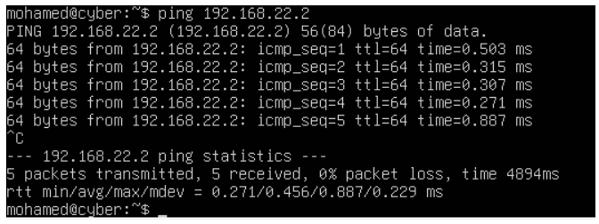
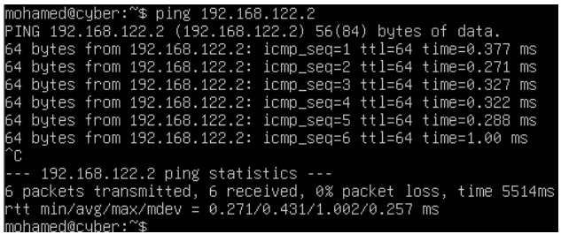
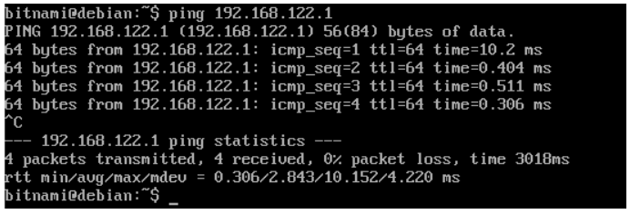

IP Address Table
| Device | Role | IP Address | Subnet Mask |
|---|---|---|---|
| Desktop VM (Ubuntu Desktop) | Management | 192.168.22.2 | 255.255.255.0 |
| Gateway Router VM (enp0s3) | Internet Access | 10.0.0.16 | 255.255.255.0 |
| Gateway Router VM (enp0s8) | Subnet 01 - Internal Network | 192.168.22.1 | 255.255.255.0 |
| Gateway Router VM (enp0s9) | Subnet 02 - Internal Network | 192.168.122.1 | 255.255.255.0 |
| Application Server VM (Bitnami) | Server | 192.168.122.2 | 255.255.255.0 |

Configuration Codes
Cisco Router Configuration Commands:
Router1> enable
Router1# configure terminal
Router1(config)# interface fastethernet 0/0
Router1(config-if)# ip address 192.168.22.1 255.255.255.0
Router1(config-if)# no shutdown
Router1(config-if)# exit
Router1(config)# interface fastethernet 0/1
Router1(config-if)# ip address 192.168.122.1 255.255.255.0
Router1(config-if)# no shutdown
Router1(config-if)# exit
Ubuntu Server Configuration:
# Set up static IPs
sudo nano /etc/netplan/00-installer-config.yaml
# Example configuration
network:
version: 2
renderer: networkd
ethernets:
enp0s3:
dhcp4: no
addresses: [10.0.0.16/24]
gateway4: 10.0.0.1
enp0s8:
dhcp4: no
addresses: [192.168.22.1/24]
enp0s9:
dhcp4: no
addresses: [192.168.122.1/24]
# Save and apply changes
sudo netplan apply
Ubuntu Desktop Configuration:
# Go to Network Settings
# Set IPv4 Method to Manual
# Add Address: 192.168.22.2
# Netmask: 255.255.255.0
# Gateway: 192.168.22.1
Bitnami Application Server Configuration:
# Edit network interfaces
sudo nano /etc/network/interfaces
# Add the following:
auto enp0s3
iface enp0s3 inet static
address 192.168.122.2
netmask 255.255.255.0
gateway 192.168.122.1
# Restart networking services
sudo systemctl restart networking
Functional Test Results
Evidence of communication between all VMs:
- Ping results between Ubuntu Server and Desktop: 
- Ping results between Ubuntu Server and Application Server: 
- Application server to Ubuntu server: 
Video Demonstration
Watch the project demonstration video below:
Alternatively, watch on YouTube.